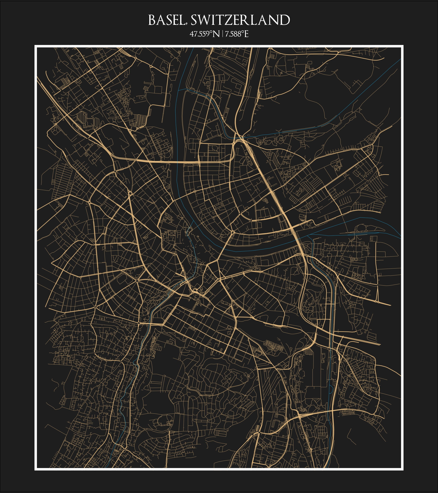

Today’s Agenda
Relax! No hands-on coding today
👋 Quick intro
📊 Explore visuals & libraries
📚 Links to resources
✋ Q&A

A Non-Traditional Road

Anyone can learn R! Open source with a very supportive community.
ggplot: Geospatial / Maps 🗺️

ggplot2, sf, and osmdata. Part of the #30DayMapChallenge.
ggplot2, combined with cowplotggiraph - interactive ggplot2!
Include tooltips on hover and click events. View here.